Unit 2
Stochastic Dynamic Programming and Applications

4SC000, Q2 2026-2027
Duarte Antunes
Outline
- Stochastic dynamic programming
- Applications
Discussion
- We can use the policy provided by the dynamic programming algorithm assuming no disturbances to cope with disturbances.
- Is this procedure optimal in any sense? In general, no.
- In fact, as we show next, in the presence of disturbances it may not even be possible to define optimal decisions, since these would depend on future realizations of disturbances.
Example
Move a robot from an initial stage \(0\) to a final stage \(h\) in minimum time
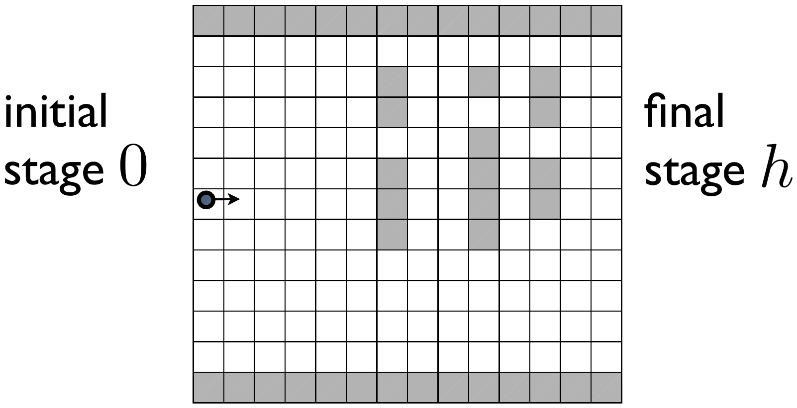
Deterministic formulation first and then introduce disturbances
- If the robot is not stuck in an obstacle or in a wall it can go up, straight or down. Otherwise, there is only one option (see figs). It takes 1 time unit to move horizontally from stage \(i\) to stage \(i+1\) and \(\sqrt{2}\) to move diagonally. \(c\) time units are paid every time an obstacle or a wall is hit.
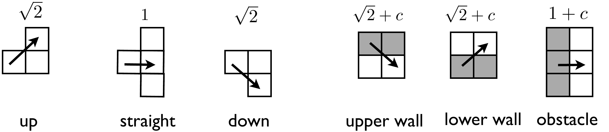
Modeling
This problem can be written in the DP framework for a transition diagram obtained from the rules of the problem.
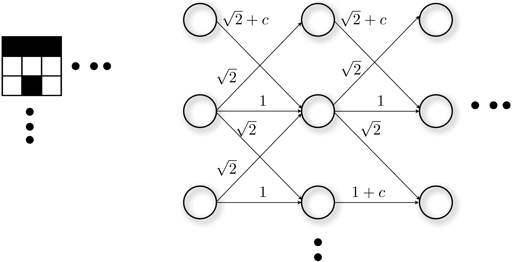
DP equation
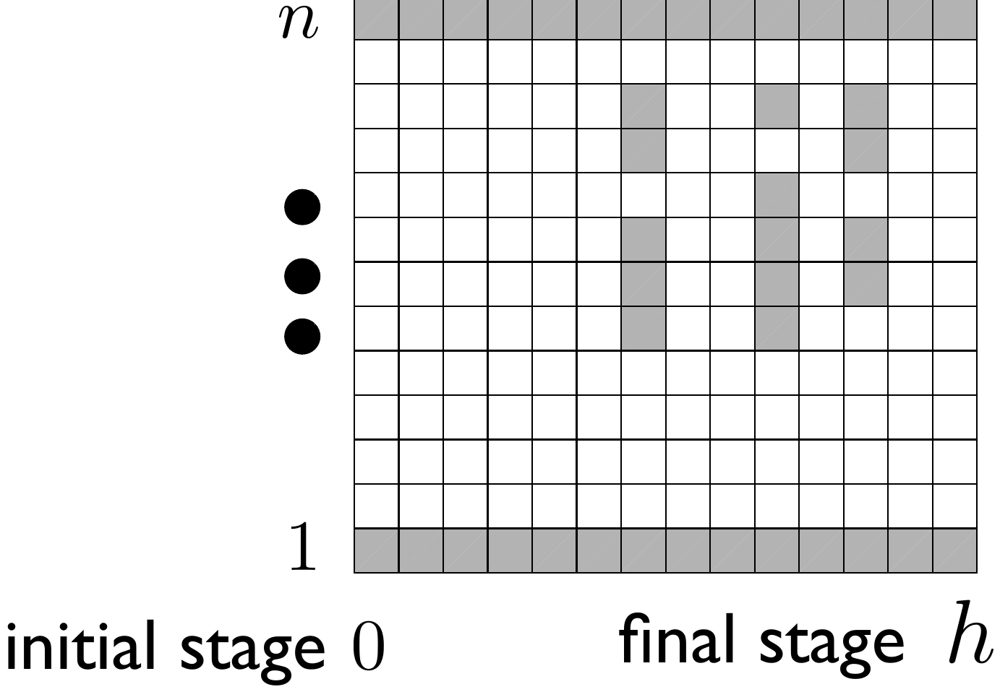
\[J_h(i) = 0 \quad i \in \{1,\dots,n\}\]
For \(k \in \{h-1, h-2, \dots, 1, 0\}\):
\[J_k(1) = \sqrt{2} + c + J_{k+1}(2)\]
\[J_k(n) = \sqrt{2} + c + J_{k+1}(n-1)\]
\[J_k(i) = \min\{1+J_{k+1}(i), \sqrt{2}+J_{k+1}(i+1), \sqrt{2}+J_{k+1}(i-1)\} \quad \text{not an obstacle node}\]
\[J_k(i) = 1 + c + J_{k+1}(i) \qquad i \in \{2,\dots,n-1\} \quad \text{obstacle node}\]
Numerical example
\[J_k(n) = \sqrt{2}+c+J_{k+1}(n-1) \qquad J_h(i) = 0\]
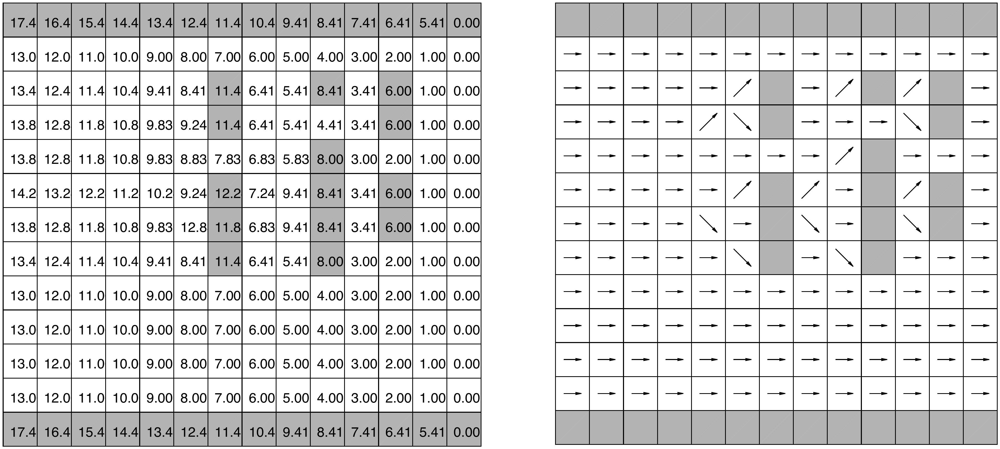
\[J_k(1) = \sqrt{2}+c+J_{k+1}(2) \qquad\qquad c=4\]
\[J_k(i) = \min\{1+J_{k+1}(i), \sqrt{2}+J_{k+1}(i+1), \sqrt{2}+J_{k+1}(i-1)\} \quad \text{not an obstacle node}\]
\[J_k(i) = 1+c+J_{k+1}(i) \qquad \text{obstacle node}\]
Introducing disturbances
Consider that at position A there might be a disturbance making the robot move down one extra position.
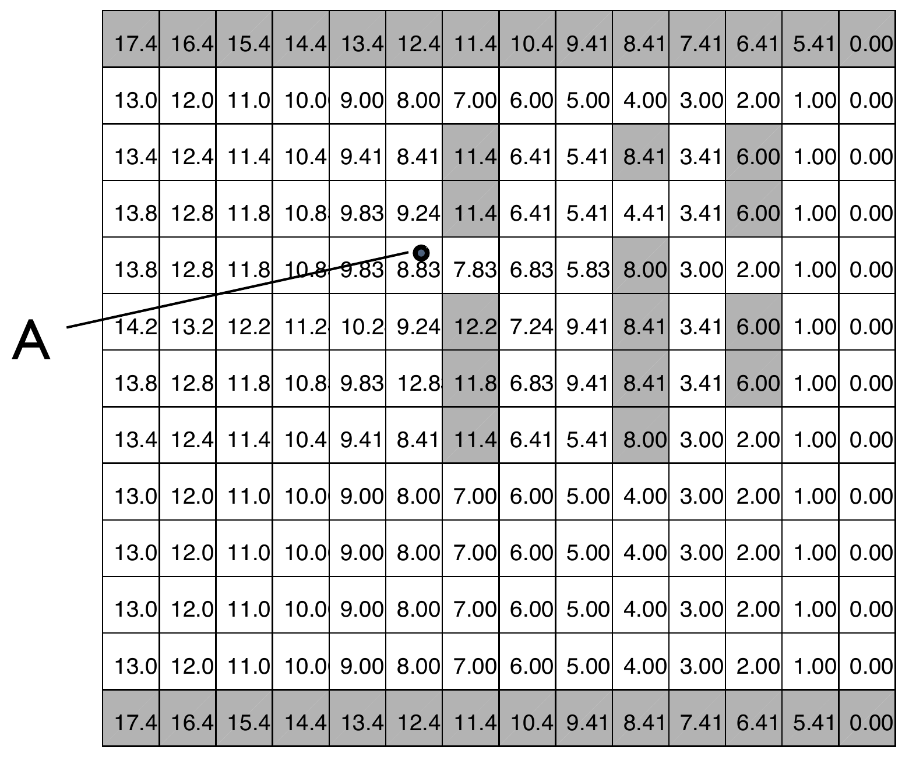
Possible outcomes (no disturbance/ disturbance)
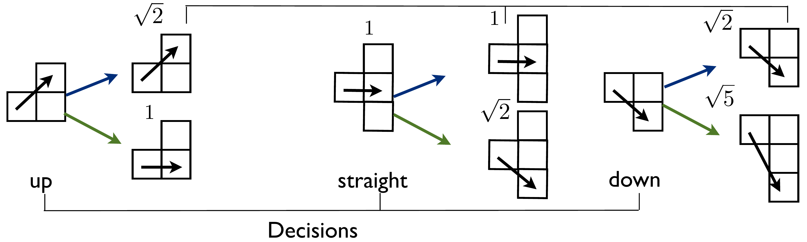
Example
| no disturbance | disturbance | |
|---|---|---|
| decision: ‘up’ | \(11.4+\sqrt{2}\) | \(7.83+1\) |
| decision: ‘straight’ | \(7.83+1\) | \(12.2+\sqrt{2}\) |
| decision: ‘down’ | \(12.2+\sqrt{2}\) | \(11.8+\sqrt{5}\) |
If we knew the future disturbance value, we would pick ‘up’ if ‘disturbance’, ‘straight’ if ‘no disturbance’.
Thus, if we assume nothing about the disturbances there is no optimal decision at position A.
Assumptions on disturbances
There are two assumptions that make optimal decisions well-defined
- Stochastic disturbances. If we have a stochastic characterization of disturbances we can define optimal policies as the ones that minimize the expected cost. The dynamic programming framework can be extended to provide this policy.
- Worst-case disturbances. Optimal control problems with worst-case disturbances can be tackled in the framework of game theory and will not be addressed in the course.
Stochastic disturbances
For the toy robot problem consider the stochastic characterization: \(\text{Prob}[\text{disturbance}]=0.2\), \(\text{Prob}[\text{no disturbance}]=0.8\)
| no disturbance | disturbance | Expected cost | |
|---|---|---|---|
| decision: ‘up’ | \(11.4+\sqrt{2}\) | \(7.83+1\) | \((11.4+\sqrt{2})0.8+(7.83+1)0.2=12.0174\) |
| decision: ‘straight’ | \(7.83+1\) | \(12.2+\sqrt{2}\) | \((7.83+1)0.8+(12.2+\sqrt{2})0.2=9.79\) |
| decision: ‘down’ | \(12.2+\sqrt{2}\) | \(11.8+\sqrt{5}\) | \((12.2+\sqrt{2})0.8+(11.8+\sqrt{5})0.2=13.69\) |
Optimal decision is now well-defined: pick ‘straight’.
Worst-case disturbances
| no disturbance | disturbance | Worst-case cost | |
|---|---|---|---|
| decision: ‘up’ | \(11.4+\sqrt{2}\) | \(7.83+1\) | \(11.4+\sqrt{2}\) |
| decision: ‘straight’ | \(7.83+1\) | \(12.2+\sqrt{2}\) | \(12.2+\sqrt{2}\) |
| decision: ‘down’ | \(12.2+\sqrt{2}\) | \(11.8+\sqrt{5}\) | \(11.8+\sqrt{5}\) |
Optimal decision is now well-defined: pick ‘up’.
Safe policy (at least we get \(11.4+\sqrt{2}\)).
Stochastic formulation
The dynamic model and the cost take now the form
\[x_{k+1} = f_k(x_k, u_k, w_k)\]
\[\sum_{k=0}^{h-1} g_k(x_k, u_k, w_k) + g_h(x_h)\]
where the state and input live in the same finite spaces defined before (slide 3), and disturbances belong to a finite set \(w_k \in W_k(i,j) := \{1,\dots,\omega_{i,j,k}\}\) when \(x_k=i\), \(u_k=j\) and are characterised by
\[p_\ell^{k,i,j} := \text{Prob}[w_k = \ell \mid x_k=i, u_k=j], \quad \ell \in W_k(i,j).\]
Note that both the state and cost are now random variables. This model is often referred to as a Markov Decision Process (MDP).
Stochastic formulation
Given a policy \(\pi = \{\mu_0,\dots,\mu_{h-1}\}\), \(u_k = \mu_k(x_k)\), leading to,
\[x_{k+1} = f_k(x_k, \mu_k(x_k), w_k),\]
define the expected cost
\[J_\pi(x_0) = \mathbb{E}\Big[\sum_{k=0}^{h-1} g_k(x_k, \mu_k(x_k), w_k) + g_h(x_h)\Big],\]
where \(J_\pi(x_0)\) is a real number for each initial condition.
The goal is to find a policy that minimizes the cost \(J_\pi\).
Stochastic Dynamic Prog. algorithm
Start with \(J_h(i) = g_h(i)\) for every \(i \in X_k\) and for each decision stage, starting from the last and moving backwards, \(k \in \{h-1,h-2,\dots,0\}\) compute \(\mu_k\) and \(J_k\) as
\[J_k(i) = \min_{j \in U_k(i)} \sum_{\ell \in W_k(i,j)} p_\ell^{k,i,j} \big(g_k(i,j,\ell) + J_{k+1}(f_k(i,j,\ell))\big) \quad \text{(DP eq.)}\]
and
\[\mu_k(i) = j,\]
where \(j\) is a minimizer in the DP equation. Then \(\{\mu_0,\dots,\mu_{h-1}\}\) is an optimal policy.
- Equivalently, we can write the DP equation as \[J_k(x_k) = \min_{u_k \in U_k(x_k)} \; \mathbb{E}_{w_k}\big[g_k(x_k,u_k,w_k) + J_{k+1}(f_k(x_k,u_k,w_k))\big]\]
- Each function \(J_\ell(i)\) is now the expected cost-to-go when \(x_\ell = i\) \[J_\ell(i) = \mathbb{E}\Big[\sum_{k=\ell}^{h-1} g_k(x_k,\mu_k(x_k),w_k) + g_h(x_h)\Big]\]
- In particular \(J_0(i)\) is the expected cost for a given initial condition \(x_0=i\).
- The notation \(J_\ell(i) = \mathbb{E}[\sum_{k=\ell}^{h-1} g_k(x_k,\mu_k(x_k),w_k) + g_h(x_h) \mid x_\ell=i]\) is often also used.
Discussion
- The nomenclature ‘Markov decision processes’ comes from the fact that the dynamic model has the so-called Markov property.
- Intuitively the Markov property states that the probability that the process moves to a new state depends only on the current state and action; given the current state and action the next state is conditionally independent of all previous states and actions.
- Formally, the Markov property states that for any function \(f\), \[\mathbb{E}[f(x_{k+1}) \mid x_k, u_k, x_{k-1}, u_{k-1}, \dots, x_0, u_0] = \mathbb{E}[f(x_{k+1}) \mid x_k, u_k]\]
- This property follows from the definition of the dynamic model.
Example
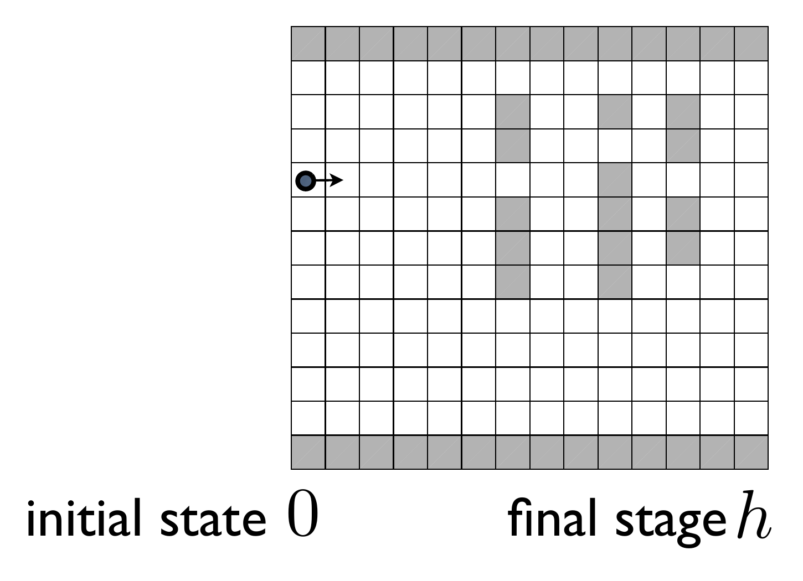
Consider the deterministic problem introduced before but now assume that for regular nodes (no obstacles) the evolution of the state is stochastic for every stage and state.
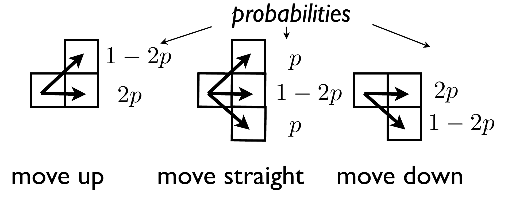
Dynamic Programming equation
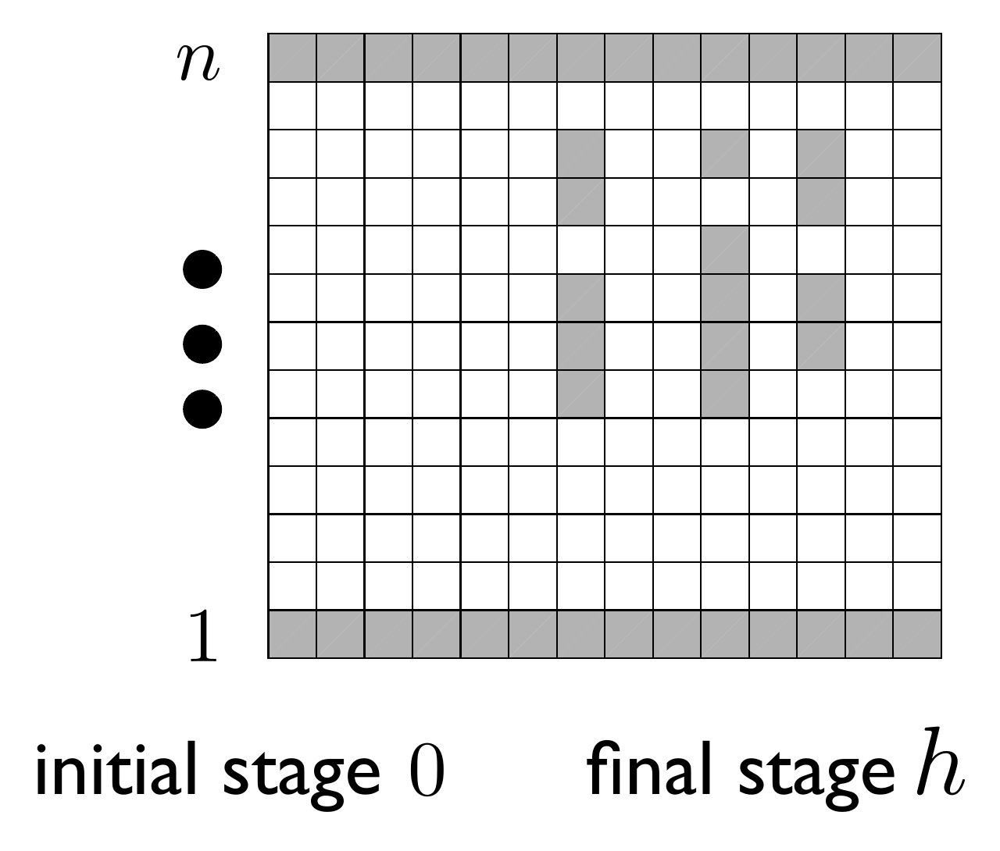
\[J_k(1) = \sqrt{2}+c+J_{k+1}(2)\]
\[J_k(n) = \sqrt{2}+c+J_{k+1}(n-1)\]
\[J_h(i) = 0 \qquad i \in \{1,\dots,n\}\]
\[J_k(i) = 1+c+J_{k+1}(i) \qquad \text{obstacle node}, \; i \in \{2,\dots,n-1\}\]
Stochastic:
\[J_k(i) = \min\{(1-2p)(1+J_{k+1}(i)) + p(\sqrt{2}+J_{k+1}(i+1)) + p(\sqrt{2}+J_{k+1}(i-1)),\] \[2p(1+J_{k+1}(i)) + (1-2p)(\sqrt{2}+J_{k+1}(i+1)),\] \[2p(1+J_{k+1}(i)) + (1-2p)(\sqrt{2}+J_{k+1}(i-1))\}, \quad i \in \{2,\dots,n-1\}\]
Compare with deterministic (computed before):
\[J_k(i) = \min\{1+J_{k+1}(i), \sqrt{2}+J_{k+1}(i+1), \sqrt{2}+J_{k+1}(i-1)\}\]
Numerical example
\(p = 0.1\), \(c = 4\)
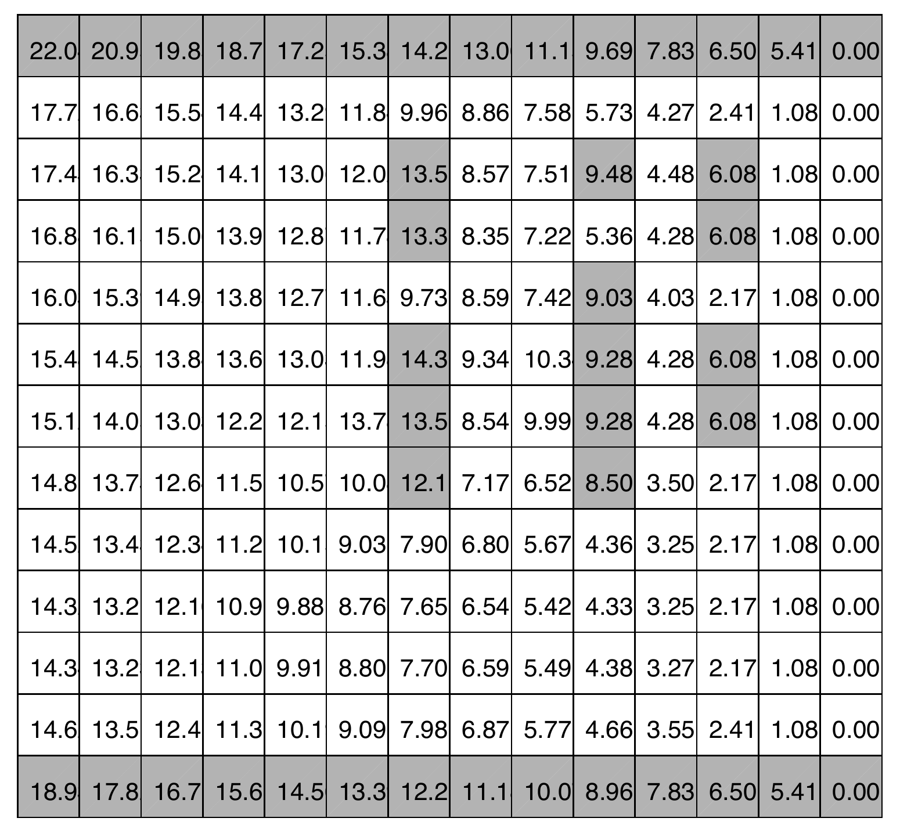
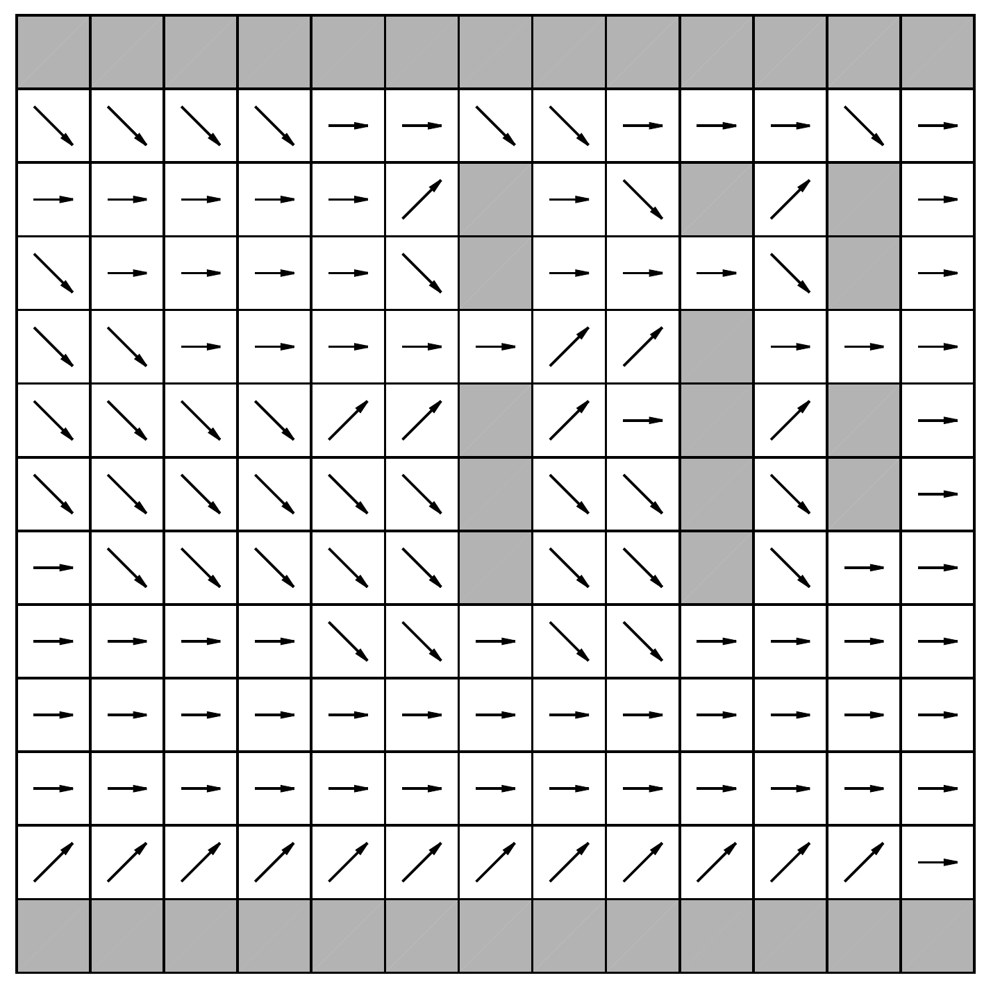
\[J_k(i) = \min\{(1-2p)(1+J_{k+1}(i)) + p(\sqrt{2}+J_{k+1}(i+1)) + p(\sqrt{2}+J_{k+1}(i-1)),\] \[2p(1+J_{k+1}(i)) + (1-2p)(\sqrt{2}+J_{k+1}(i+1)),\] \[2p(1+J_{k+1}(i)) + (1-2p)(\sqrt{2}+J_{k+1}(i-1))\}\]
Comparison with deterministic
The optimal policy coping with uncertainty is intuitive: go around the obstacles!
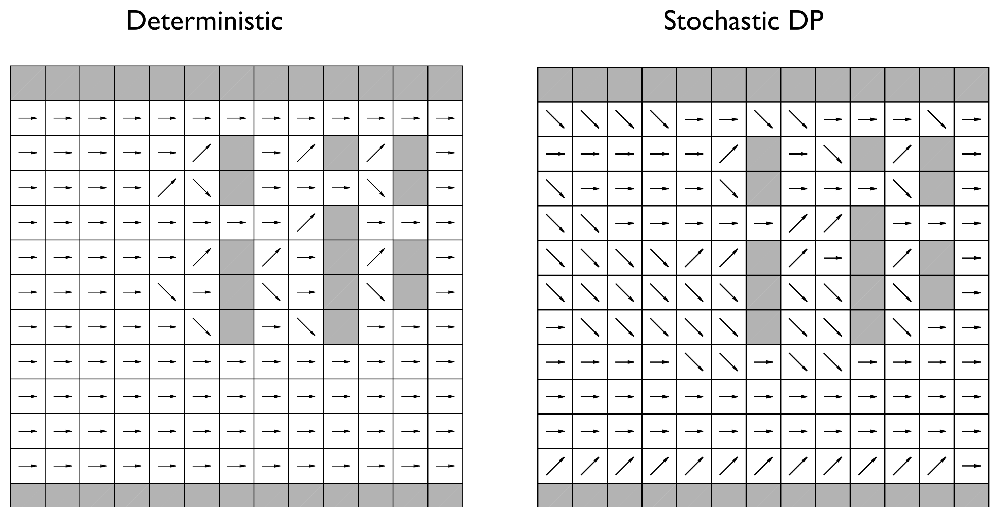
Coping with disturbances
- Open loop - apply control inputs of optimal path
- May not make sense, leads to poor performance or instability.
- Feedback policy obtained from the DP algorithm neglecting disturbances
- Often followed in practice (specially in eng. contexts) due to the difficulty in obtaining a stochastic characterizing of disturbances.
- Later we will call this policy certainty equivalent control.
- Feedback policy obtained from the DP algorithm for stochastic models
- Important in operational research problems, games, etc., but limited use in practical control applications.
Open loop
- Compute optimal decisions for a given initial state assuming no disturbances
- predicted cost 13.8
- Blindly apply these decisions
- cost of perturbed path in the picture: 26.66
- average cost of 1000 perturbed paths: 22.04
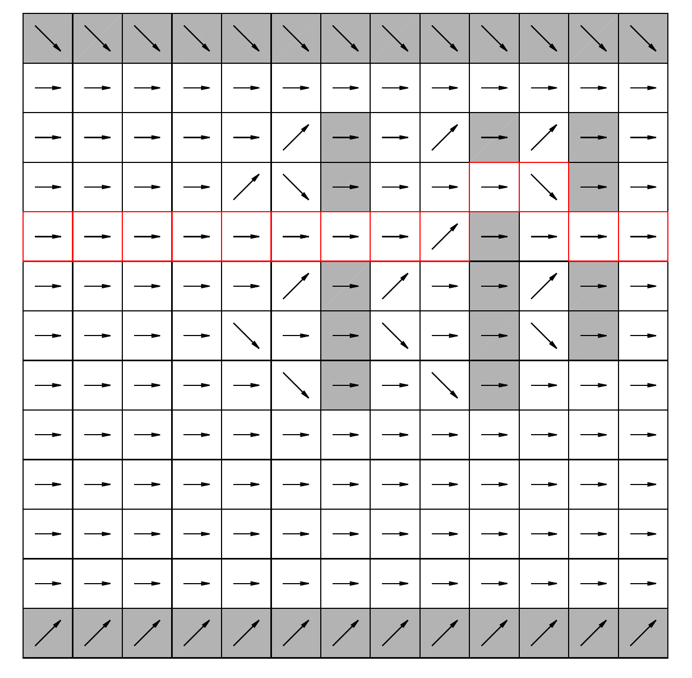
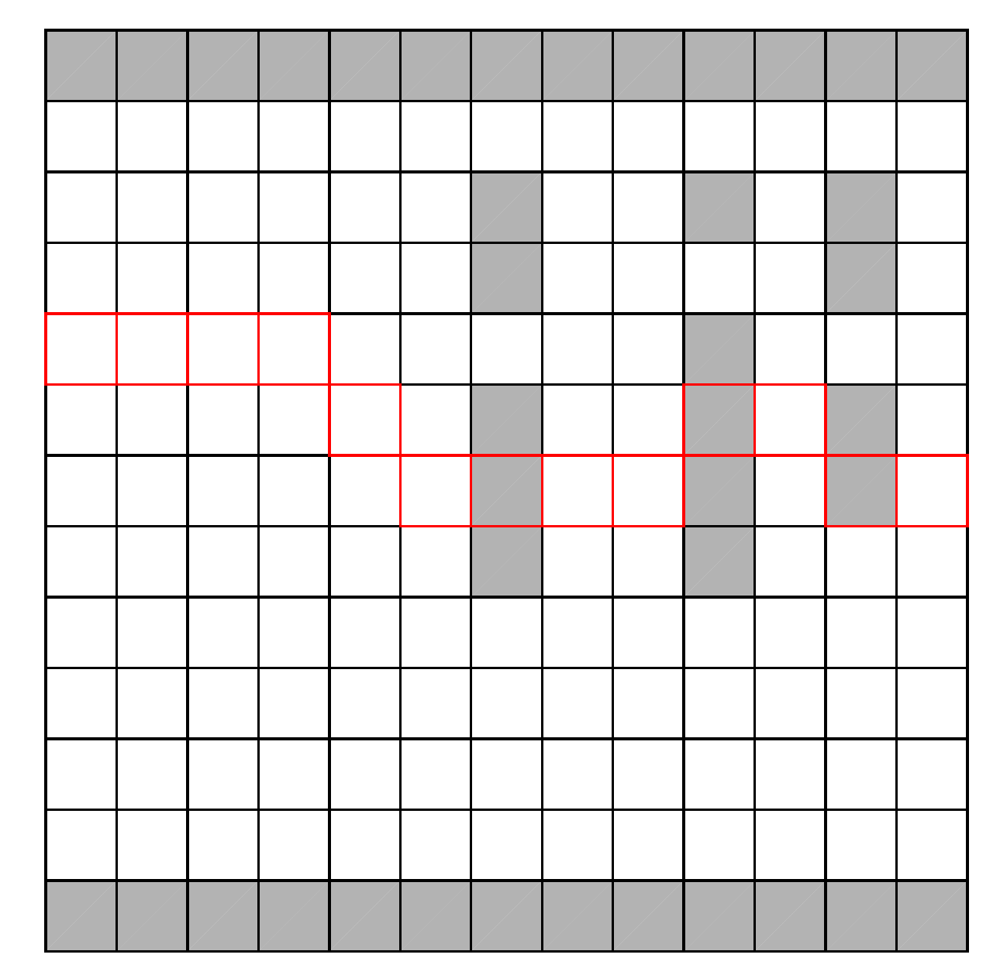
(open-loop decisions applied only at regular nodes, at obstacle and wall nodes the options are unique)
Closed loop with deterministic DP
- Compute optimal policy assuming no disturbances
- Re-decide online based on the policy
- cost of perturbed path in the picture: 19.07
- average cost of 1000 perturbed paths: 17.51
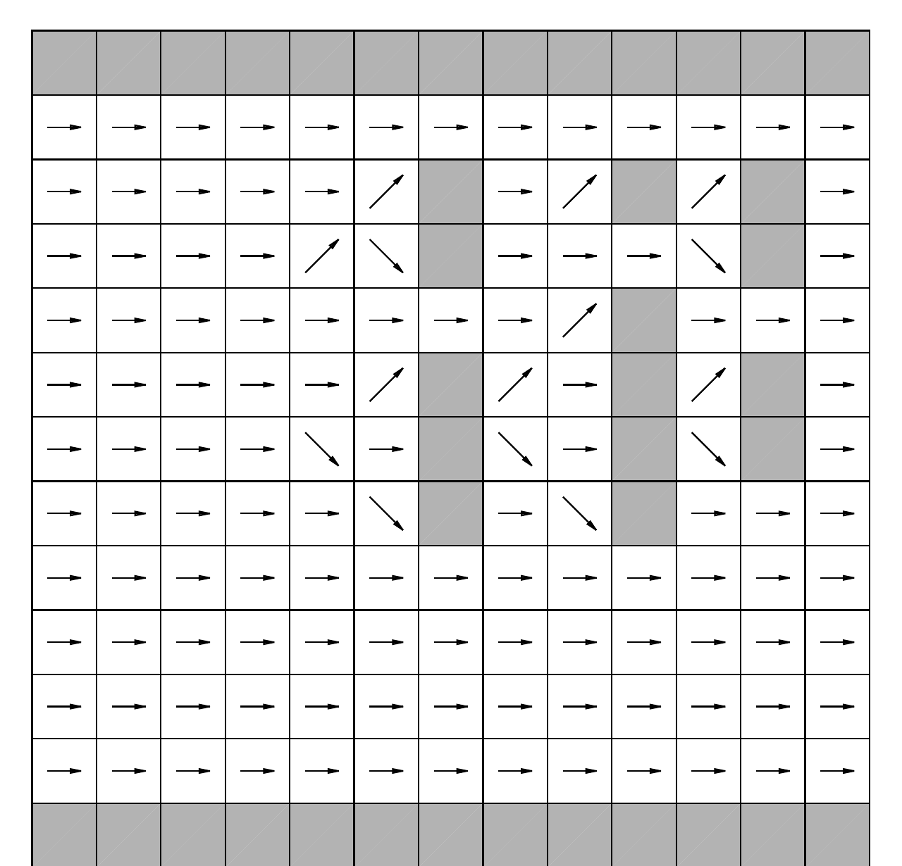
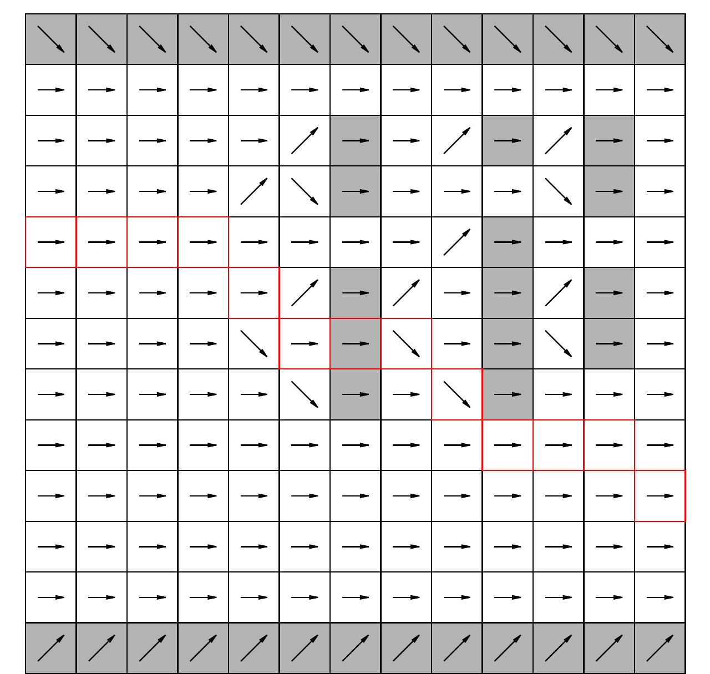
Closed loop with stochastic DP
- Compute optimal policy coping with disturbances
- Re-decide online based on the policy
- cost of perturbed path in the picture: 15.48
- average cost of 1000 perturbed paths: 15.96
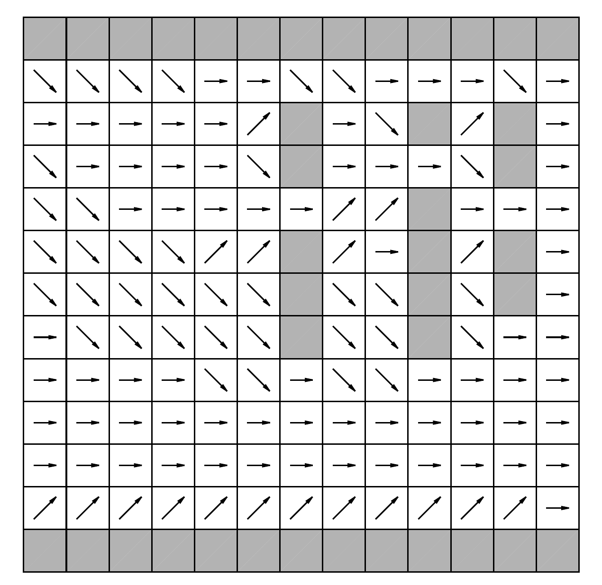
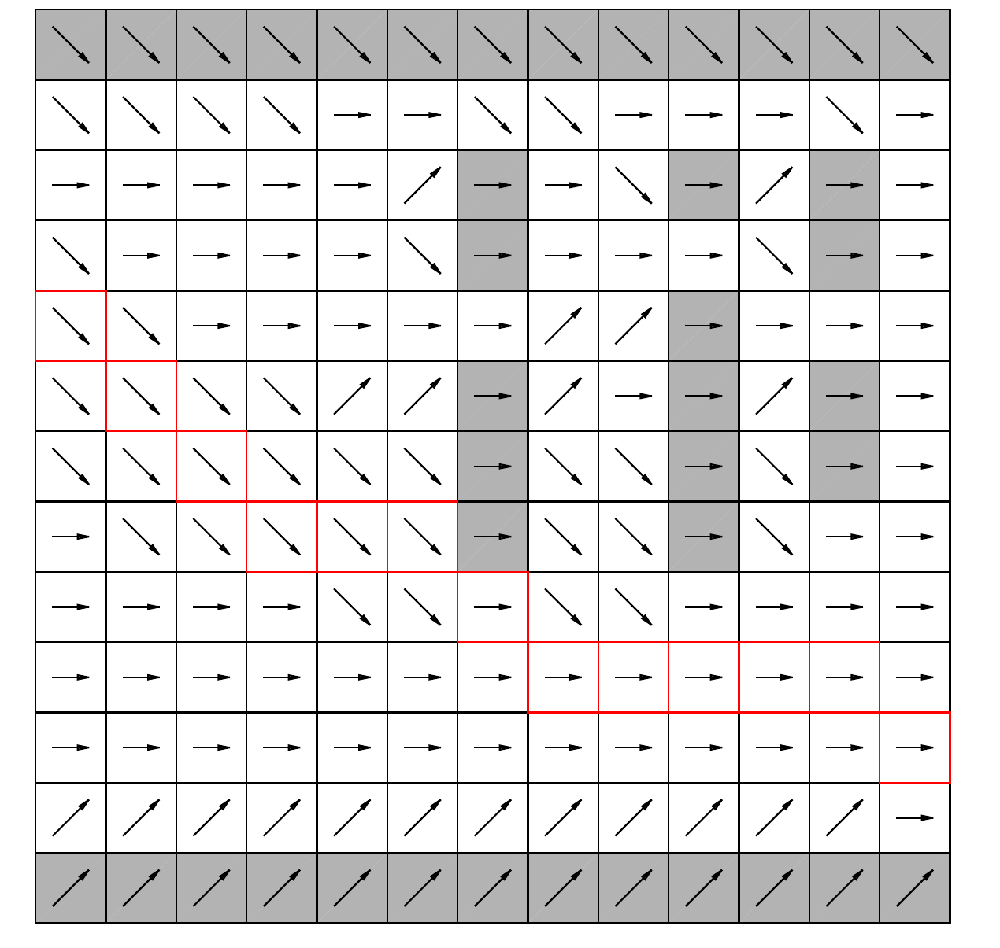
Equivalent formulation
Often it is simpler to specify the model \(x_{k+1} = f_k(x_k, u_k, w_k)\) in terms of matrices
\[[P_k(j)]_{ri} = \text{Prob}[x_{k+1} = r \mid x_k=i, u_k=j]\]
called the transition probabilities.
Example. Suppose that the dynamical model is
\[x_{k+1} = \min\{\max\{x_k+u_k+w_k, 1\}, c_k\}\]
with \(c_k = \begin{cases}2 & \text{if } k \text{ is odd}\\3 & \text{if } k \text{ is even}\end{cases}\), \(u_k \in \{1,2\}\), \(\text{Prob}[w_k=0]=2/3\), \(\text{Prob}[w_k=-1]=1/3\)
Then
For odd \(k\): \(P_k(1) = \begin{bmatrix}1/3 & 1\\2/3 & 0\end{bmatrix}\), \(P_k(2) = \begin{bmatrix}0 & 0\\1 & 1\end{bmatrix}\).
For even \(k\): \(P_k(1) = \begin{bmatrix}1/3 & 0 & 0\\2/3 & 1/3 & 0\\0 & 2/3 & 1\end{bmatrix}\), \(P_k(2) = \begin{bmatrix}0 & 0 & 0\\1/3 & 0 & 0\\2/3 & 1 & 0\end{bmatrix}\).
Equivalent formulation
Given the transition probabilities we can construct a trivial model that represents the system
\[x_{k+1} = w_k\]
\[\text{Prob}[w_k = j \mid x_k=i, u_k=\ell] = P_{ji}(\ell)\]
The running cost remains the same if it only depends on state and inputs and if it also depends on disturbances it is adjusted to
\[\sum_{k=0}^{h-1} \mathbb{E}[g_k(x_k,u_k,w_k) + g_h(x_h)] \longrightarrow \sum_{k=0}^{h-1} \mathbb{E}[\tilde{g}(x_k,u_k) + g_h(x_h)] \quad \tilde{g}(i,u) = \sum_j P_{ji}(u) g_k(i,u,j)\]
The dynamic programming equations can be written in this formulation as
\[J_k(i) = \min_u \tilde{g}(i,u) + \sum_j P_{ji}(u) J_{k+1}(j) \qquad J_h(i) = g_h(i)\]
for every \(i\).
Outline
- Stochastic dynamic programming
- Applications
Discussion
- Stochastic dynamic programming has a large number of applications in management, finance, games, operational research and other areas requiring decisions in the presence of uncertainty.
- Here we focus on:
- One interesting class of problems are optimal stopping problems where at each stage one must decide either to stop or continue a given process (possibly at a given cost). This is one of the simplest applications.
- Planning in the presence of uncertainty: spending a day in Efteling.
The car parking problem
Juliet is taking her boyfriend Romeo to watch a movie in a crowded local cinema. They are late and need to find a parking place.
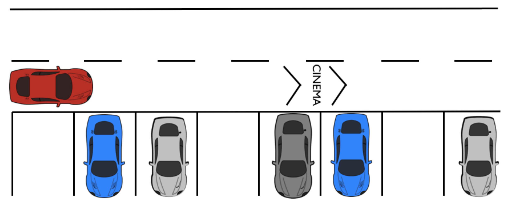
- If they park \(k \in \{1,\dots,h\}\) places away from the cinema they loose \(ck\) minutes of the movie.
- Each parking place is free with probability \(p_k = 1-\alpha^k\), \(0 < \alpha < 1\)
- If they reach the cinema without having parked they have to wait in the parking queue of the cinema, which typically takes about \(C\) minutes.
When should they park (stop searching) to minimize expected delay?
Dynamic programming formulation
- \(h\) - # parking places, stage \(\ell \in \{0,1,\dots,h-1\}\), \(k = h-\ell\).
- State \(x_\ell \in \{F,S,O\}\) parking spot \(\ell\) free - \(F\), occupied - \(O\), car is already parked - \(S\).
- Terminal state \(x_h = E\).
- When \(x_\ell = F\), \(u \in \{P, DP\}\), park (\(P\)) cost \(ck\), don’t park (\(DP\)) cost \(0\); when \(x_\ell = O\), \(u_\ell = DP\).
- If \(u_\ell = DP\), \(x_{\ell+1} = F\) with probability \(1-\alpha^{(h-(\ell+1))}\) and \(x_{\ell+1}=O\) with probability \(\alpha^{(h-(\ell+1))}\)
- If the decision is not to park at the final stage, the cost is \(C\).
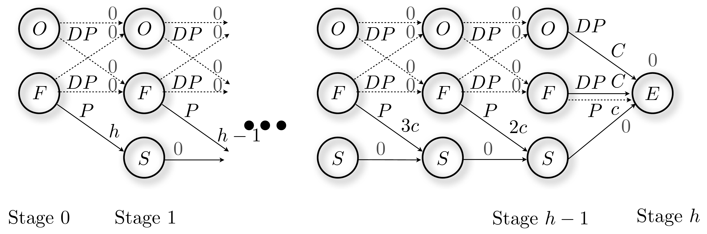
Dynamic programming algorithm
\(p_k = 1-\alpha^k\), \(q_k = \alpha^k\)
Stage \(h\): \(J_h(E) = 0\).
Stage \(h-1\): \(J_{h-1}(O) = C\), \(J_{h-1}(F) = \min\{C, c\}\)
Stage \(h-2\):
\[J_{h-2}(O) = p_1 J_{h-1}(F) + q_1 J_{h-1}(O) = p_1 \min\{C,c\} + q_1 C,\] \[J_{h-2}(F) = \min\{p_1 J_{h-1}(F) + q_1 J_{h-1}(O), 2c\} = \min\{p_1\min\{C,c\}+q_1 C, 2c\}\]
\(\dots\)
Stage \(h-(k+1)\):
\[J_{h-(k+1)}(O) = p_k J_{h-k}(F) + q_k J_{h-k}(O)\] \[= p_k\min\{p_{k-1}J_{h-(k-1)}(F) + q_{k-1}J_{h-(k-1)}(O), ck\} + q_k(p_{k-1}J_{h-(k-1)}(F) + q_{k-1}J_{h-(k-1)}(O)),\] \[J_{h-(k+1)}(F) = \min\{p_k J_{h-k}(F) + q_k J_{h-k}(O), c(k+1)\}\]
Numerical example
\(\alpha = 0.8\), \(h=4\), \(C=3\), \(c=1\)
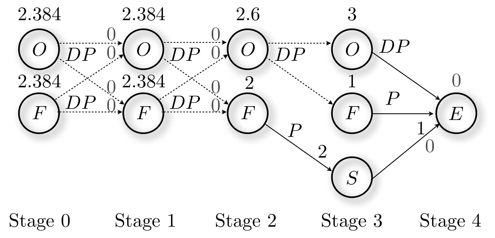
Simple optimal rule: park if there are parking places at distance two or one away from the cinema, otherwise do not park.
Planning with uncertainty
How to plan your afternoon in Efteling to maximize your additive rewards in your favourite attractions given (stochastic) models of waiting times in queues?
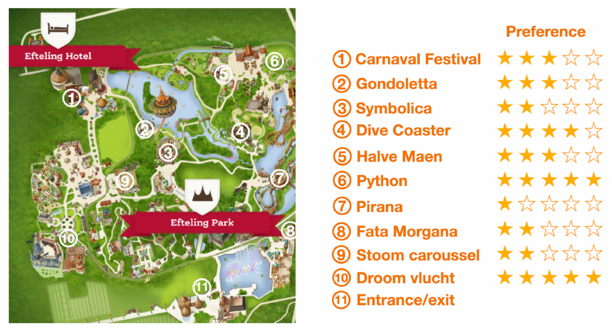
Visitors preferences
Model
The time period is from 14h00 until 19h00 and is divided into \(T\) time slots of 5 minutes from \(k=1\) (14h00-14h05) until \(k=T=60\) (18h55-19h00).
Time to walk from one attraction to another (and to and from the entrance/exit) are deterministic and given in Figure 2. There are \(M=10\) attractions plus the entrance/exit 11. Estimated times also include the time to travel to and from the entrance/exit.
The visitor does not desire to visit each of the attractions more than once.
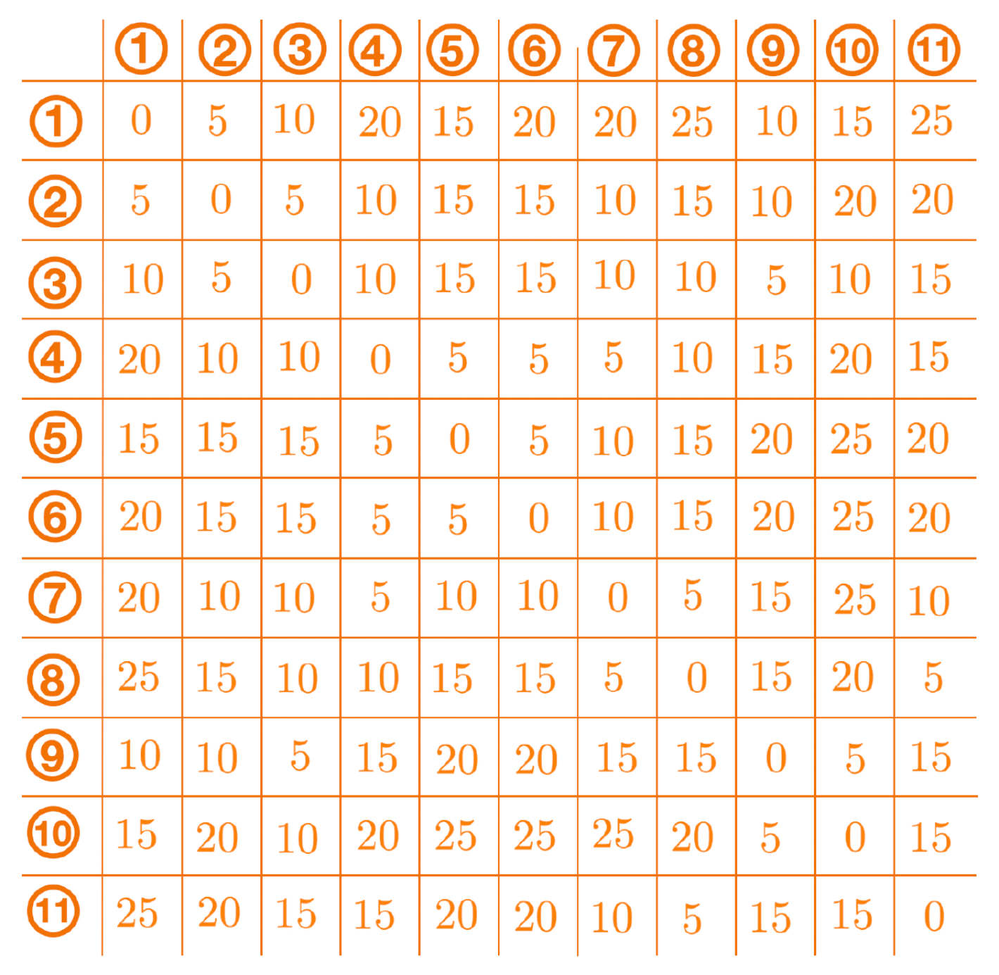
Walking time between attractions & exit
Goal
Suppose that we know the waiting distribution as a function of time.
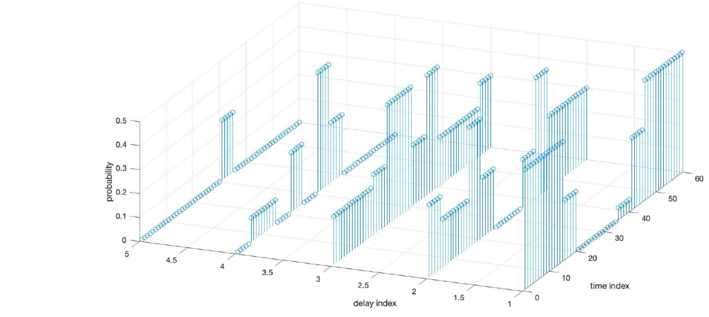
Stochastic waiting time distribution as a function of time
Let the state be
- a unique label representing the attractions visited so far \(a_M a_{M-1} \dots a_2 a_1\), \(a_i \in \{0,1\}\)
- time index
- Last visited attraction \(c \in \{1,\dots,M\}\), in particular \(a_c = 1\)
Find a policy that for each state provides the next attraction to go to.
Stochastic dynamic programming
Consider a very large number of possible iteration \(T\) and consider
\(g_T(x_T) = \infty\) if terminal state is not feasible.
\(g_T(x_T) = 0\) if terminal state is feasible.
A feasible terminal state is such that given the last visited attraction and the current time one still has enough time to exit.
Intuitively at the terminal stage \(T\) we assume that one will exit the park even if one has time.
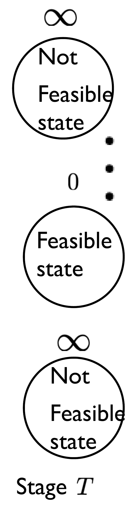
Stochastic dynamic programming
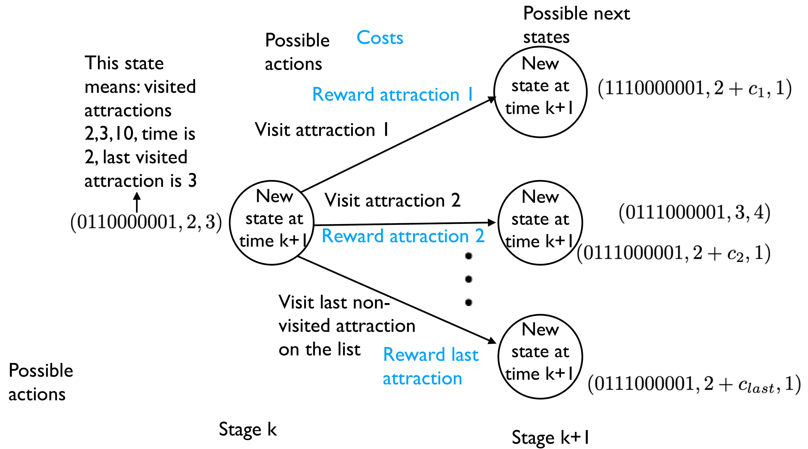
\(c_i\) - time to walk to attraction \(i\) + random waiting time at attraction \(i\)
Cost of each arrow are the reverse rewards of the coming attraction (visible in the state).
Optimal policy
After setting up the problem one runs DP. If the horizon is long enough one can show that DP converges (both the costs-to-go and the policy) and we have an optimal policy (we will later justify this in the course).
Example: if the state is \((1111100000, 25, 2)\)
optimal policy might determine to move to attraction 10.
Other applications
See internship theses of former TU/e students at the repository
Autonomous Parking Spot Ranking, Jeroen Vanhegelsom, 2022
A thesis developed at company Lightyear, Eindhoven, using stochastic dynamic programming for planning dynamic parking strategies for solar panels powered cars to optimized sun exposition.
Optimal planning strategies balancing sensing and acting under uncertainty and partial observability, Femke Voogt, 2026
A thesis developed at company VBTI, Eindhoven, using stochastic dynamic programming for planning leaf harvest.
Concluding remarks
Summary
- We introduced a different but equivalent formalism with respect to transition diagrams.
- Stochastic DP: if one has a stochastic characterization of uncertainty one can use it to improve (in terms of expected cost) open-loop policies and even the closed-loop policy obtained with dynamic programming assuming deterministic behavior.
- We gave two examples: games and stopping times.
Appendix A
Stochastic dynamic programming for the inventory control example
Inventory control example
Applying the dynamic programming algorithm to the inventory control example with uncertain demand at stage 2, \(\text{Prob}[d_2=0]=0.5\), \(\text{Prob}[d_2=1]=0.5\) we obtain (see Lecture 1)
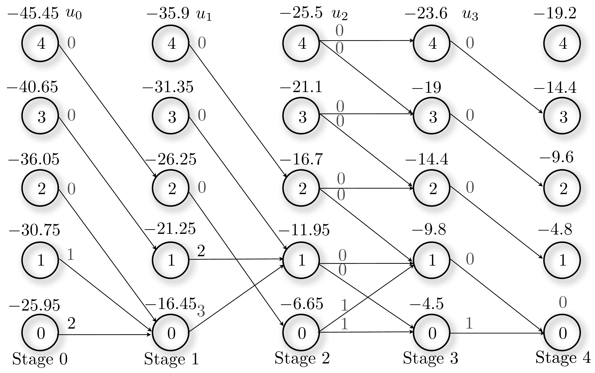
Computing the optimal policy
- Notice that since there is only one disturbance at stage 2 the costs-to-go at stage 3 match the ones obtained before in the deterministic case.
- Decisions at stage 2 are the ones that minimize the expected cost-to-go. We have seen that for state 0 \(u_2=1\) is better than \(u_2=2\) and actually it is the optimal decision.
- Another example:
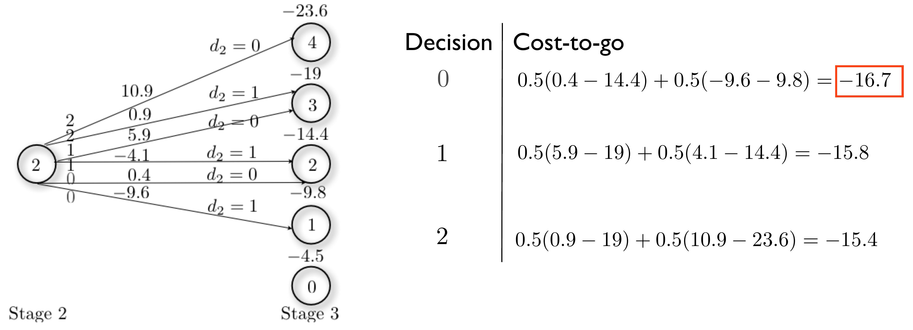
- For stage 0 and stages 1 there is no uncertainty. To obtain the respective costs-to-go one can apply the dynamic programming algorithm considering the expected costs-to-go at stage 2.
Appendix B
Another stopping time problem: asset selling
Asset selling
When to accept an offer for an asset, e.g., a house, in other to maximize terminal expected revenue?
Assumptions:
- Independent offers, denoted by \(w_0,w_1,\dots,w_{N-1}\), occur in \(N\) periods of time.
- The offers take values in a finite set \(w_k \in \{a_1,a_2,\dots,a_M\}\), \(\text{Prob}[w_k=a_i]=p_i\)
- \(w_k=0\) models the case where there is no offer in period \(N\).
- If an offer is accepted, the money is invested at a rate \(r\) until the \(N\)th period.
- Offers rejected are not renewed, and the last offer \(w_{N-1}\) must be accepted.
Asset selling
Let \(x_k\), for \(k \geq 1\), equal the most recent offer \(w_{k-1}\) and pick a terminal state \(x_k = T\) to denote that the house has already been sold. Let also \(u_k=1\) for \(k \geq 1\) if one decides to accept offer \(w_{k-1}\) (sell) and \(x_0 := 0\) (zero initial offer). Then:
\[x_{k+1} = \begin{cases}T & \text{if } x_k=T, \text{ or if } x_k \neq T \text{ and } u_k=1 \text{(sell)},\\w_k & \text{otherwise.}\end{cases}\]
and the expected selling price is
\[\mathbb{E}_{w_k}\Big[g_N(x_N) + \sum_{k=0}^{N-1} g_k(x_k,u_k,w_k)\Big]\]
where \(g_k(x_k,u_k,w_k) = \begin{cases}(1+r)^{N-k}x_k & \text{if } x_k \neq T \text{ and } u_k=1\text{(sell)}\\0 & \text{otherwise.}\end{cases}\)
\[g_N(x_N) = \begin{cases}x_N & \text{if } x_N \neq T,\\0 & \text{if } x_N = T\end{cases}\]
Asset selling
Applying the dynamic programming algorithm we conclude that
\[J_N(x_N) = \begin{cases}x_N & \text{if } x_N \neq T,\\0 & \text{if } x_N = T\end{cases}\]
\[J_k(x_k) = \begin{cases}\max\big[(1+r)^{N-k}x_k,\; \mathbb{E}[J_{k+1}(w_k)]\big] & \text{if } x_k \neq T\\0 & \text{if } x_k = T\end{cases}\]
Policy
accept the offer \(x_k\) if \(x_k > \alpha_k\)
reject the offer \(x_k\) if \(x_k \leq \alpha_k\)
\[\alpha_k = \mathbb{E}[J_{k+1}(w_k)] = \frac{\sum_{i=1}^M p_i J_{k+1}(a_i)}{(1+r)^{N-k}}\]
Appendix C
A simple game
A simple game
Two players (\(A\) and \(B\)), repetitively play two fair games:
- Player \(A\) tosses a coin of \(1\) money unit: if the outcome is ‘heads’ he/she gains \(1\) point (Player \(B\) looses \(1\) point); otherwise he/she looses \(1\) point (Player \(B\) gains \(1\) point).
- Player \(A\) tosses a coin of \(2\) money units: if the outcome is ‘heads’ he/she gains \(2\) points (Player \(B\) looses \(2\) points), otherwise he/she looses \(2\) points (Player \(B\) gains \(2\) points).
- The game ends if one of the players achieves \(L\) or \(L+1\) points in which case that player receives \(L\) money units from the other player.
- If none of the players reaches \(L\) points during \(h\) stages the game stops and the players do not win or loose anything.
Suppose \(h=2\), \(L=3\) and both players have zero points at the initial stage.
Can player \(A\) gain money in expectation by deciding at each stage which coin to toss?
DP formulation
Dynamic model \(\quad x_{k+1} = f(x_k,u_k,w_k)\)
\(x_k\) - #points of player \(A\)
\(u_k \in \{1,2\}\) - decision
\(w_k \in \{-1,1\}\), tails \(\to -1\), heads \(\to 1\)
\(k \in \{0,\dots,h-1\}\)
\[f(x_k,u_k,w_k) = \begin{cases}x_k+1 & \text{if } u_k=1 \text{ and } w_k=1\\x_k+2 & \text{if } u_k=2 \text{ and } w_k=1\\x_k-1 & \text{if } u_k=1 \text{ and } w_k=-1\\x_k-2 & \text{if } u_k=2 \text{ and } w_k=-1\\x_k & \text{if } x_k \in \{L, L+1, -L, -(L+1)\} \text{ (game has ended but wait for the last stage)}\end{cases}\]
Cost \(\quad \min \sum_{k=0}^{h-1} g(x_k,u_k) + g_h(x_h)\)
\(g(x_k,u_k) = 0\) for every \(x_k, u_k\)
\(g_h(x_h) = \begin{cases}-L & \text{if } x_h = L \text{ or } x_h = L+1\\L & \text{if } x_h=-L \text{ or } x_h=-(L+1)\\0 & \text{otherwise}\end{cases}\)
(note that profit = -cost)
DP algorithm
DP algorithm \(\quad J_h(x_h) = g_h(x_h)\)
\[J_k(x_k) = \min_{u_k} \mathbb{E}[g(x_k,u_k) + J_{k+1}(x_{k+1}) \mid x_k] \quad k \in \{h-1,h-2,\dots,0\}\]
Using the expression for \(f(x_k,u_k,w_k)\) we obtain
\[J_k(x_k) = \begin{cases}\min\Big\{\dfrac{J_{k+1}(x_k+1)+J_{k+1}(x_k-1)}{2}, \dfrac{J_{k+1}(x_k+2)+J_{k+1}(x_k-2)}{2}\Big\}, & \text{otherwise}\\J_{k+1}(x_k), & \text{if } x_k \in \{-(L+1),-L,L,(L+1)\}\end{cases}\]
\[J_h(x_h) = \begin{cases}-L & \text{if } x_h=L \text{ or } x_h=L+1\\L & \text{if } x_h=-L \text{ or } x_h=-(L+1)\\0 & \text{otherwise}\end{cases}\]
Optimal policy and cost
Iterating this equation we get the costs-to-go and optimal decisions indicated in the diagram
(circles correspond to states and are labeled with the number of points at a given stage, cost-to-go on top and decision next to them).
For the zero initial condition the average cost is \(-3/4\) and so the profit is \(3/4\).
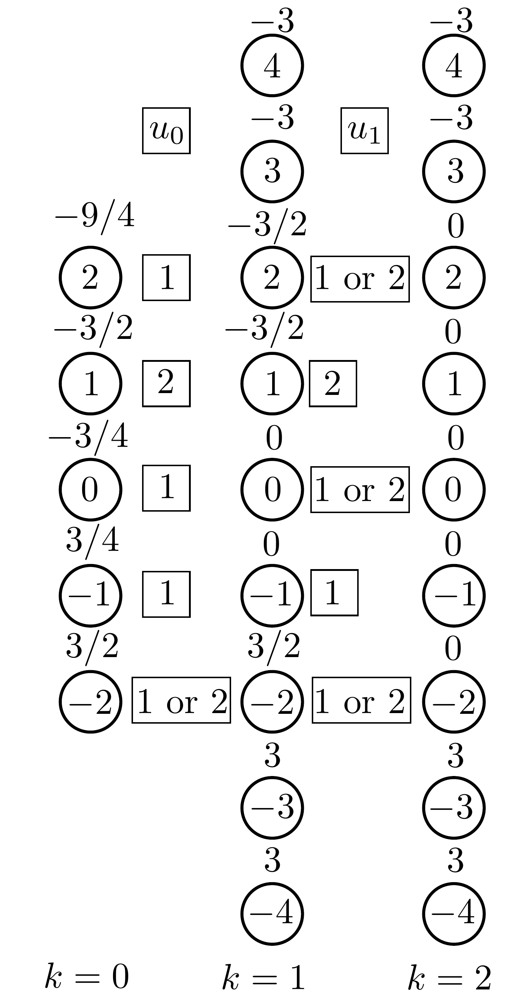
4SC000 – Optimal Control and Reinforcement Learning